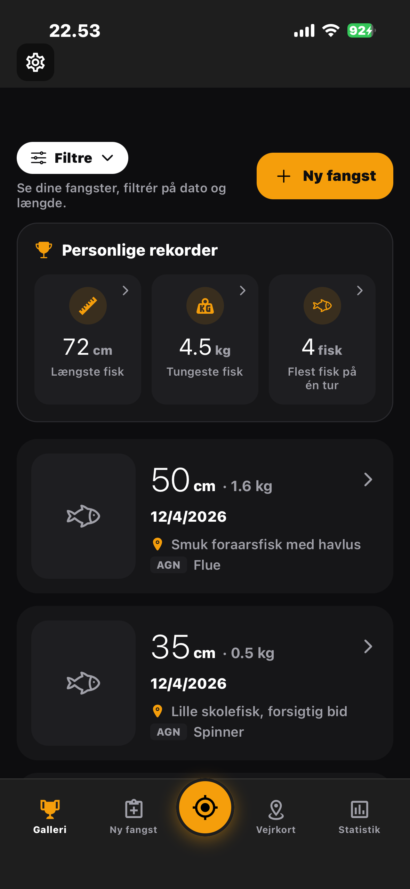

GPS-Tracking
Track dine
fisketure
Start en tur, følg din rute og se vejrdata i realtid
Screenshot 1
Personlige rekorder, filtrering og fuld oversigt over dit fiskeri

Screenshot 2
Start en tur, følg din rute og se vejrdata i realtid
Screenshot 3
Detaljeret statistik over fisk, ture, timer og din personlige succesrate

Screenshot 4
Se hvilke pladser der performer bedst og følg din månedsoversigt

Screenshot 5
Analysér dine fangster op mod vejr, vind, vandtemperatur og årstid

Screenshot 6
Se vindretning, styrke og vejrudvikling direkte på kortet

Screenshot 7
Temperatur, vind, vandstand, tryk og meget mere — automatisk logget
Screenshot 8
Vandtemperatur, vandstand og tryk vist som live grafer under din tur